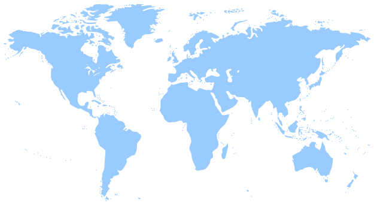
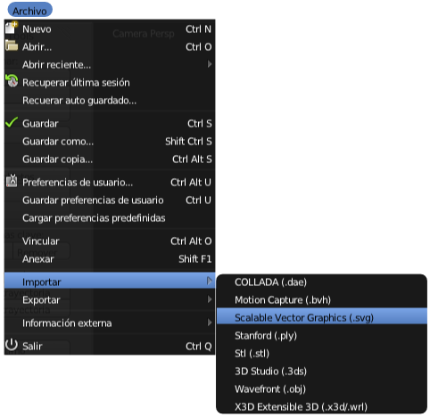
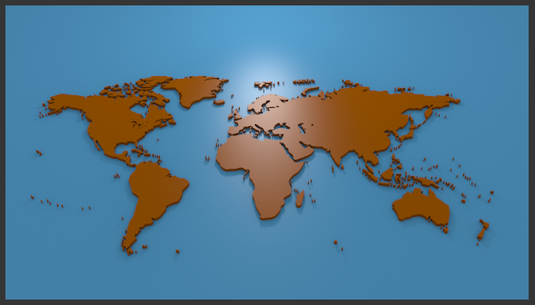

Importar SVG
Las curvas de bézier son muy versátiles y encuentran en el formato SVG (Scalable Vector Graphic) un aliado de excepción por los siguientes motivos:
- Es un formato libre.
- Inkscape, que es software de código abierto, lo usa como formato nativo.
- Blender importa curvas SVG con bastante fiabilidad e incluso con los colores en hexadecimal.
- Hay muchos recursos gratuitos y libres disponibles en internet en este formato.
Repositorios de gráficos en SVG
- Open Clip Art (www.openclipart.org). El más famoso de todos. Sus recursos se publican bajo licencia Dominio Público y se pueden usar para cualquier fin (personal o comercial) sin restricciones.
- Libre Clip Art (libreclipart.blogspot.com). Mucho más modesto pero nuevamente los recursos están bajo licencia Dominio Público.
- Wikimedia Commons (http://commons.wikimedia.org). En realidad Wikimedia es un super-repositorio con todo tipo de recursos gráficos (animaciones, imágenes, gráficos...) con licencia Creative Commons, Dominio público... Allí podemos encontrar muchos materiales en SVG.
El tipo de gráfico que nosotros debemos utilizar en Blender debe ser de carácter sencillo, como una silueta. Este podría ser un buen ejemplo:

World Map / Autor: Molumen / Licencia: Public Domain
Lo usaremos para poner en práctica este recurso:
- Descarga desde Open Clip Art.
- Descarga directa desde aquí.
{kind=link}
Lo único que tenemos que saber es el menú para incorporar el SVG dentro del entorno 3D de Blender. Muy sencillo: Archivo/Importar/Scalable Vector Graphics (.svg).
Blender incorpora el gráfico de forma inmediata. A partír de ahí sólo nos queda tratarlo como si de cualquier curva bézier se tratara.
